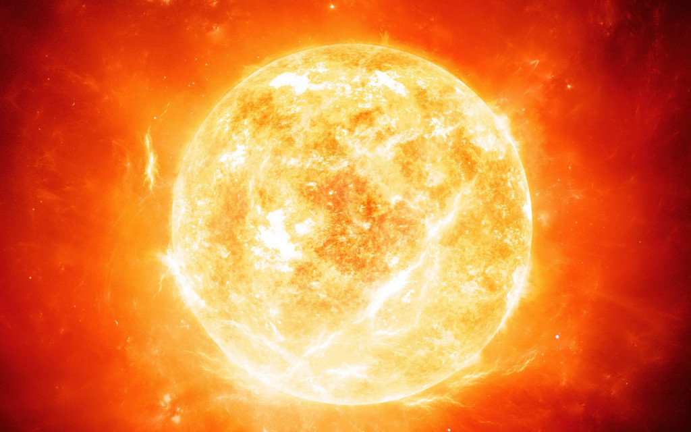

Soarele este o stea de tip pitică galbenă aflată în centrul Sistemului Solar. Cu un diametru de aproximativ 1,39 milioane de kilometri, el este de peste 100 de ori mai mare decât Pământul. Este alcătuit în principal din hidrogen (74%) și heliu (24%) și generează energie prin fuziune nucleară. Lumina solară ajunge pe Pământ în aproximativ 8 minute, iar această energie susține viața și clima pe planeta noastră.
Soarele este steaua centrală a sistemului nostru solar și sursa principală de lumină și energie pentru viața de pe Pământ. Acesta este o sferă uriașă de gaz, în principal hidrogen și heliu, care produce energie printr-un proces numit fuziune nucleară. În interiorul soarelui, temperaturile sunt extrem de ridicate, ajungând până la aproximativ 15 milioane de grade Celsius. Fuziunea nucleară care are loc în nucleul soarelui transformă hidrogenul în heliu, eliberând cantități uriașe de energie sub formă de lumină și căldură. Acestea ajung la Pământ sub formă de radiații electromagnetice, care sunt esențiale pentru susținerea vieții pe planetă. Soarele are o masă de aproximativ 330.000 de ori mai mare decât cea a Pământului și o influență gravitațională extrem de puternică, care menține planetele și alte obiecte ale sistemului solar în orbitele lor. De asemenea, activitatea sa influențează fenomenul cunoscut sub numele de vreme spațială, care poate afecta tehnologia de pe Pământ, inclusiv sateliții și comunicațiile.
